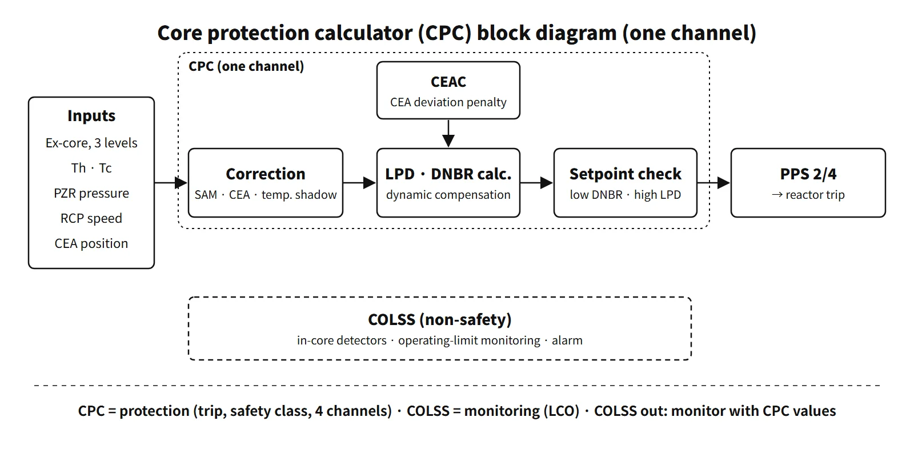

Systems & Equipment · C-SY-006
Core Protection Calculator (CPC) — CE-Type Protection That Computes DNBR and LPD Directly from Three-Level Ex-Core Signals
Inputs, the SAM and shadowing corrections, LPD and DNBR trips, CEAC penalties, COLSS and the OTΔT/OPΔT alternative.
The core protection calculator (CPC) is the safety-class, four-channel digital calculator of CE-type PWRs (OPR1000, APR1400). It takes the ex-core nuclear instruments, RCS temperatures, pressure, RCP speeds and CEA positions, calculates the minimum DNBR and the maximum local power density (LPD) in real time, and when a setpoint is reached sends low-DNBR and high-LPD reactor trip signals to the plant protection system (PPS), keeping the SAFDLs during anticipated operational occurrences (AOOs).
Here LPD is not a volumetric power density but the local linear heat rate in kW/ft. DNBR is not the distance between two curves but the minimum of the ratio q″CHF/q″.
Principle and mechanism
Five kinds of input
| Input | Sensor | Where it is used |
|---|---|---|
| Ex-core neutron flux | One detector per channel with upper, middle and lower subdetectors | Power level, axial power distribution |
| Coolant temperature | Hot-leg and cold-leg RTDs | Thermal power (ΔT), inlet enthalpy, temperature shadowing correction |
| Pressure | Pressurizer pressure | DNBR calculation |
| Flow | Speeds of the four RCPs | Core flow (FLOW) |
| CEA position | Position transmitters (RSPT) + CEAC deviation penalties | Radial peaking factor, CEA shadowing correction |
Calculation chain
- Ex-core signal correction: the inverse of the shape annealing matrix (SAM) converts the three detector responses into equivalent core-periphery responses (lower, middle, upper), and each segment is multiplied by its CEA shadowing correction factor. The chain then splits in two. Summing the three segments and multiplying by the temperature shadowing factor and the thermal power calibration constant gives the calibrated neutron power; dividing by the sum normalizes the axial shape.
- LPD calculation: the average linear power is multiplied by the axial shape, the planar peaking factor (Fxy) for the CEA configuration and the penalties, and the maximum gives the peak linear power (LPD).
- DNBR calculation: the core minimum DNBR is calculated from power, axial shape, cold-leg temperature, pressure and flow. A fast cycle (UPDATE) and a detailed cycle (STATIC) run separately.
- Dynamic compensation: static offsets and digital filters are applied to the measured cold-leg temperature and pressurizer pressure and to the calculated thermal power, neutron flux power and LPD, to make up for instrument lags. As a result the heat flux used by the CPC during a transient is higher than the actual value, and the calculated DNBR is conservative (APR1400 DC RAI response 15.04.02-1).
- Comparison and output (TRIPSEQ): values are compared with the pretrip and trip setpoints and contact outputs are generated.
![Left: cutaway scene of the core with a three-level ex-core detector (upper, middle, lower segments), an inserted CEA causing CEA shadowing and downcomer water causing temperature shadowing. Centre: inputs (ex-core flux, CEA position with CEAC penalties, Th and Tc RTDs, pressurizer pressure and four RCP speeds) feed equation cards P = S inverse times D (shape annealing matrix), P prime k = C CEA,k times P k (CEA shadowing), calibrated power = K cal times C T(Tc) times the sum of P prime k (temperature shadowing), and axial shape = P prime k over the sum. Right: LPD max = average linear power times max(axial shape times Fxy times penalty) with a high LPD trip (setpoint in kW/ft), and minimum DNBR = min(q CHF over q) with a low DNBR trip, leading to a PPS 2/4 reactor trip; pretrip leads separately to an alarm and CEA withdrawal prohibit](../../assets/images/concepts/c-sy-006-core-protection-calculator/fig1-cpc-calculation-chain.webp)
Two shadowing factors
- CEA shadowing factor: when a CEA is inserted at the core periphery, it depresses the flux nearby, so the ex-core detector response falls differently from the core average power. A correction multiplier for each segment, depending on CEA position (including partial insertion within a detector segment), brings the response back in line with the core average. It has the largest effect on the accuracy of the synthesized axial shape.
- Temperature shadowing factor: the coolant density in the downcomer between the core and the detectors changes with cold-leg temperature. When the inlet temperature falls, the water becomes denser and attenuates more, so the detector response falls at the same power. A factor proportional to the change in cold-leg temperature corrects this. It is unrelated to the peripheral power distribution.
- The two factors and the SAM are set each cycle from core design calculations and start-up tests; in normal operation the ex-core power is periodically calibrated to the secondary heat-balance power.
CEAC and penalties
The CEAC detects position deviations within a CEA subgroup (a dropped or misaligned CEA) and sends DNBR and LPD penalty factors to each CPC. It is the device that satisfies GDC 25 (SAFDLs maintained for any single malfunction of the reactivity control system). In early APR1400 design studies, a dropped high-worth 12-finger CEA could cause an immediate trip through a penalty of about 1.3, so an algorithm that actuates the reactor power cutback system (RPCS) and defers the penalty for up to 40 seconds was studied (conference paper, 2008).
What it means in a plant
- Output functions: (1) low-DNBR and high-LPD trips (PPS 2/4); (2) DNBR and LPD pretrip alarms; (3) CEA withdrawal prohibit (CWP: pretrip, subgroup deviation, CEA out of sequence); (4) display of DNBR and LPD margins on the operator module; (5) CEA position display; (6) auxiliary trips. The APR1400 US design certification (DC) documents explain that fast power increases are stopped by the CPCS variable overpower trip and slow increases by the DNBR trip.
- Setpoints: the low-DNBR and high-LPD trip setpoints vary by plant, cycle and DNB correlation (KCE-1 for APR1400 PLUS7 fuel), and the trip setpoints are not the safety-limit values themselves.
- Digitalization: the CPC of the analog era ran assembly-language programs on a minicomputer. Because the hardware went out of production, PLC-based CPCs were introduced in later units, and software verification and validation and protection against common-cause failure became regulatory issues.
COLSS: COLSS monitors, the CPC protects
The core operating limit supervisory system (COLSS) is a non-safety monitoring system that runs on the plant computer. Its algorithm has four steps.
- Core thermal power: secondary heat balance first, with ΔT power and turbine first-stage pressure power as backups
- Synthesis of the 3-D power distribution, ASI and azimuthal tilt from the fixed in-core detectors (rhodium detectors at five levels)
- Calculation of the DNBR-based and LHR-based power operating limits (POL)
- A margin alarm if the actual core power exceeds the POL
Under the APR1400 DC technical specifications, if COLSS is out of service the plant does not shut down; it monitors with the LPD and DNBR values of the operable CPC channels whether operation is within the COLR acceptable region (SR 3.2.1.1 and 3.2.4.1, every 2 hours). If outside the region, the trend is checked every 15 minutes, and the condition is restored within 1 hour if it is getting worse, or within 4 hours otherwise. If it cannot be restored, thermal power is reduced within 6 hours. CPC-based monitoring has larger uncertainty, so the acceptable region is narrower. For example, the ASI band at San Onofre 2 was ±0.28 with COLSS and ±0.20 with the CPC.
Regulatory and design criteria
For example, in the United States:
| Basis | Key point |
|---|---|
| GDC 10, 20 and 25 | Margin to SAFDLs, automatic actuation of protection systems, SAFDLs for a single malfunction of reactivity control |
| 10 CFR 50.55a(h) | IEEE 603-1991; for digital systems, IEEE 7-4.3.2 and RG 1.152 |
| NUREG-1432 (CE STS) | LCO 3.2.1 LHR, 3.2.4 DNBR (CPC monitoring when COLSS is out), 3.3.1 RPS instrumentation (CPC channels) |
| APR1400 design documents | APR1400-F-C-NR-14003-P (CPCS functional design requirements), based on the CENPD-170 series |
Easily confused pairs
| CPC | COLSS | Westinghouse OTΔT and OPΔT | |
|---|---|---|---|
| Purpose | AOO protection (trip) | LCO monitoring (alarm) | AOO protection (trip) |
| Class | Safety, four channels | Non-safety | Safety, channels per loop (3–4) |
| Detectors | Ex-core, three levels | Fixed in-core | Loop ΔT, Tavg, ex-core ΔI |
| DNBR | Calculated directly | Calculated directly (margin) | Not calculated; variable ΔT setpoint |
| Response | Fast, conservative | Slow, accurate | Fast |
Westinghouse-type plants do not calculate DNBR directly. They prevent DNB by reducing the OTΔT setpoint with Tavg, pressurizer pressure and the axial flux difference term f1(ΔI), and prevent excessive linear power by reducing the OPΔT setpoint with Tavg, its rate of change and f2(ΔI). CANDU uses dryout of the fuel bundles in the pressure tubes (critical channel power) instead of DNB. Shutdown systems SDS1 and SDS2 each generate regional overpower (ROP) trips from their own in-core detectors.
![Matrix comparing Westinghouse PWR, CE PWR (OPR1000, APR1400) and CANDU PHWR: thermal limit (DNB, DNB, fuel bundle dryout), DNB or dryout protection (OTDT trip, CPC low DNBR trip, SDS1 and SDS2 regional overpower trips from in-core detectors), overpower protection (OPDT trip, CPC high LPD trip in kW/ft, channel and bundle power limits) and operating surveillance (in-core maps for FQ and FDH and ex-core AFD, COLSS with fixed in-core detectors, flux mapping); below, the OTDT and OPDT setpoint equations with their terms explained](../../assets/images/concepts/c-sy-006-core-protection-calculator/fig2-reactor-type-protection.webp)
Key points at a glance
- Definition: CE-type safety-class four-channel calculator; computes DNBR and LPD in real time → low-DNBR and high-LPD trips (SAFDL protection during AOOs).
- Inputs: ex-core three levels, Th and Tc RTDs, pressurizer pressure, RCP speeds, CEA position (RSPT) and CEAC penalties.
- Ex-core correction: SAM → CEA shadowing factor → temperature shadowing factor → thermal power calibration.
- Calculation: synthesized axial shape × Fxy → LPD (kW/ft); DNBR by correlation; dynamic compensation (filters and offsets).
- CEAC: subgroup deviation → DNBR and LPD penalties (GDC 25).
- Outputs: trip (PPS 2/4), pretrip, CWP, margin display, CEA position display.
- COLSS: non-safety monitoring (in-core detectors, POL, margin alarm) ↔ CPC protection.
- COLSS out of service: monitor the COLR acceptable region with CPC channels; if outside, restore or reduce power.
- Versus Westinghouse: variable OTΔT (DNB) and OPΔT (kW/ft) setpoints, no direct DNBR calculation.
- Setpoints: plant-, cycle- and correlation-specific; trip setpoints are not the safety limits.
